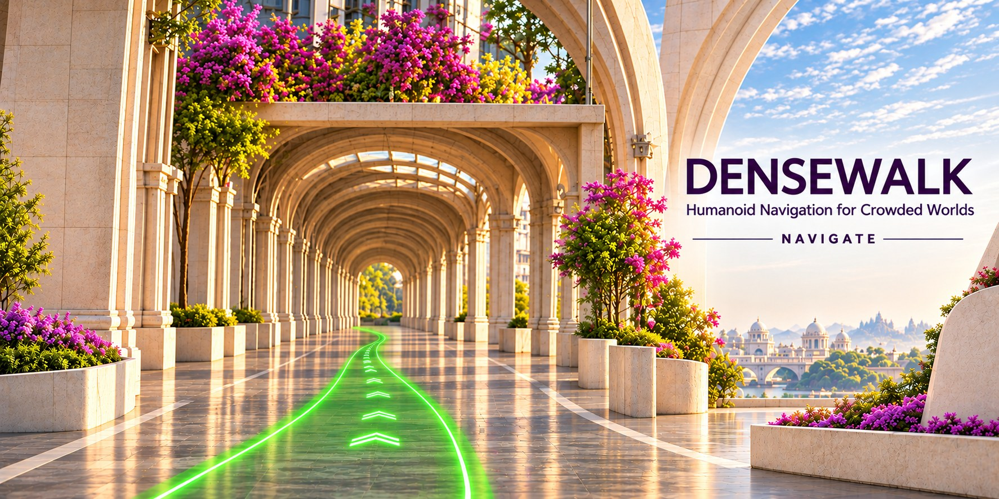
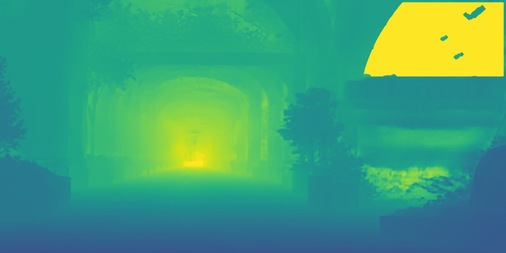

Kalki: learned walking policy in MuJoCo physics. People: NVIDIA SOMA-X bodies (Apache 2.0), motion from mocap.cs.cmu.edu. Models (CC BY 4.0, Sketchfab): auto rickshaw by bhagathartworks, Indian ricksha by anandmohan662, bicycle by by__Rx, scooter by Shivam Singh, hat gadi by 4mecharmi, street food cart by Mrinal Kukreti, ice cream thela by Adarsh Sahu.
VLA on the BITS Pilani campus
100 Kalkis, each acting on a spoken command: English on the plaza, Hindi, Bengali, Tamil and Telugu on the roofs behind it. Tap a Kalki to hear its command; drag to orbit, scroll or pinch to zoom.
Watch Navigate@BITS →BITS Pilani campus model · routes searched on a 1 m walkability grid · people: NVIDIA SOMA-X bodies, CMU mocap · voices: AI4Bharat IndicTTS & Indic Parler-TTS · motions: PraMD IndicMotion, retargeted G1 → Kalki · illustrative demo